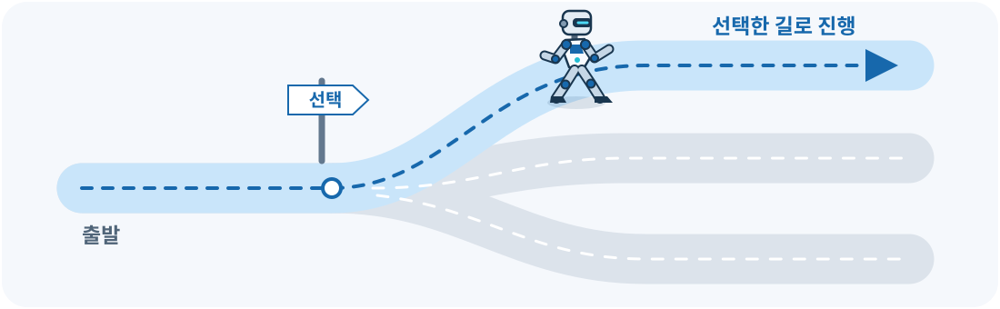
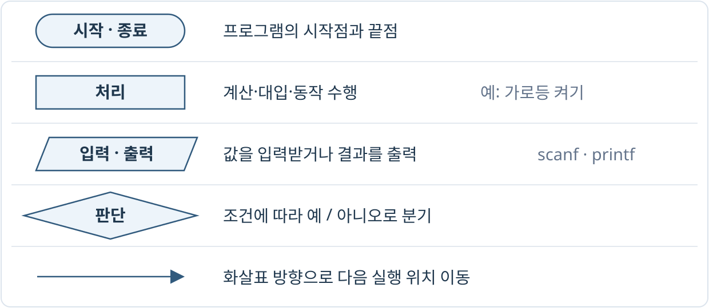
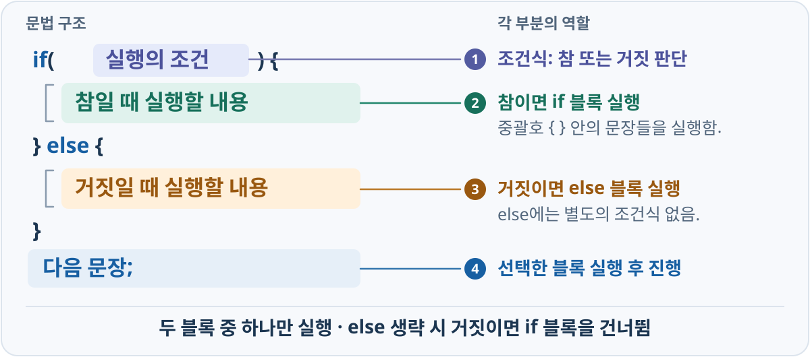
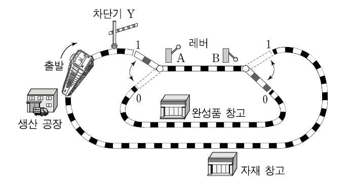
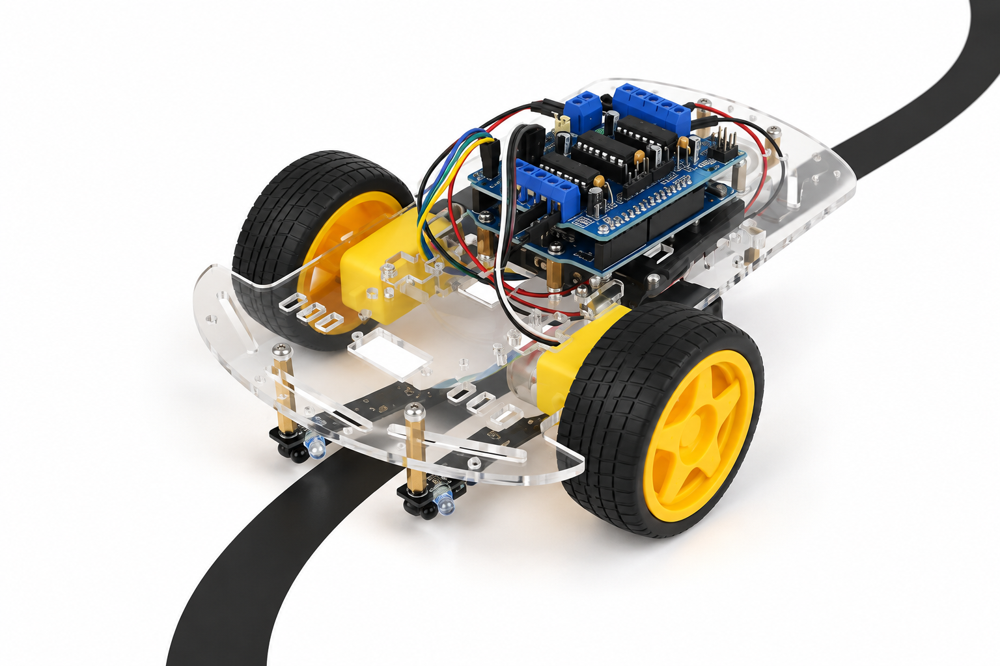

01. 조건과 실행 흐름
순차적으로 실행되는 코드에 선택 가능한 분기를 추가

입력값에 따라 실행 흐름 선택
int motor = 0;
scanf("%d", &motor);
printf("Motor %d\n", motor);
| 구분 | scanf("%d", &motor) |
printf("%d", motor) |
|---|---|---|
| 역할 | 입력을 읽어 변수에 저장 | 변수의 값을 출력 |
| 전달 대상 | &motor: 변수의 주소 |
motor: 변수의 값 |
%d의 의미 |
정수로 읽기 | 정수로 표시 |
7 입력 시 motor에 7 저장 → Motor 7 출력.<stdio.h>에 선언됨.int motor = 7;
double angle = 12.375;
printf("Motor %04d\n", motor);
printf("|%8.2f|\n", angle);
printf("battery=%d%%\n", 80);
% 기호를 포함한 세 줄의 출력 예측.Motor 0007
| 12.38|
battery=80%
%8.2f: 최소 폭 8칸, 소수 2자리. 앞쪽 공백 3칸.%%: % 하나 출력. angle에 저장된 값은 유지됨.순차적으로 실행되는 코드에 선택 가능한 분기를 추가

“우유 하나 사오고,
달걀 6개 사다 줘”
“우유 하나 사오고,
달걀이 있다면 달걀 6개 사다 줘”
int n = 0;
printf("1\n");
printf("2\n");
printf("3\n");
n의 값과 관계없이 모든 문장 실행.int n = 0;
printf("1\n");
if (n > 0) {
printf("2\n");
}
printf("3\n");
n = 1로 변경하면 1 → 2 → 3 출력.
int n = 0;
printf("1\n");
if (n > 0) {
printf("2\n");
}
printf("3\n");
n = 0이면 2 출력을 건너뛰어 1 → 3 출력.n = 1이면 ‘예’ 경로를 따라 1 → 2 → 3 출력.
int n = 3;
if (n > 0) {
printf("1\n");
}
n > 0이 조건식. 참이면 중괄호 안의 문장 실행.| A | B |
|---|---|
| 연산식 | 결과 |
|---|---|
A && B | |
A || B | |
A ^ B | |
!A | |
!B | |
A && !B | |
A || !B | |
!A || !B |
A·B 숫자 클릭: 0 ↔ 1
다음 [조건]에 따라 기차가 생산 공장을 출발하여 완성품 창고로 가기 위한 차단기 Y의 조건식으로 옳은 것은? [3점]

| 번호 | C 언어 |
|---|---|
| ① | Y = A || B |
| ② | Y = A || !B |
| ③ | Y = !A || !B |
| ④ | Y = A && B |
| ⑤ | Y = A && !B |
int n = 1;
if (n > 0) {
printf("1\n");
printf("2\n");
}
printf("3\n");
{ ... }: 조건에 따라 함께 실행할 문장들을 하나의 블록으로 묶음.n = 1이면 1, 2, 3 출력. n = 0이면 3만 출력.int n = 1;
if (n > 0) {
printf("1\n");
printf("2\n");
}
printf("3\n");
int n = 1;
if (n > 0) {
printf("1\n");
printf("2\n");
}
printf("3\n");
}는 해당 if와 같은 깊이로 정렬.int n = 0;
if (n > 0)
printf("1\n");
printf("2\n");
if 바로 다음 문장 하나만 조건에 포함됨.int mode = 0;
if (mode = 1) {
printf("AUTO\n");
}
printf("mode=%d\n", mode);
=는 대입. mode에 1을 저장하고 대입식의 값도 1이 됨.mode == 1 사용.int battery = 80;
if (battery < 20);
{
printf("LOW\n");
}
if 바로 뒤의 ;가 비어 있는 문장으로 처리됨.; 제거.if–else → else if → 실행 경로 비교
int n = 0;
if (n > 0) {
printf("1\n");
} else {
printf("2\n");
}
printf("3\n");
n = 0이면 2, 3 출력. n = 1이면 1, 3 출력.else는 조건이 거짓일 때 실행. 별도의 조건식 없음.실행 결과가 여기에 표시됩니다.
실행 결과가 여기에 표시됩니다.
실행 결과가 여기에 표시됩니다.
int battery = 20;
if (battery < 20) {
printf("DANGER\n");
} else if (battery < 50) {
printf("CAUTION\n");
} else {
printf("NORMAL\n");
}
battery >= 20인 상태.else는 앞의 모든 조건이 거짓일 때 실행됨.실행 결과가 여기에 표시됩니다.
int score = 95;
if (score >= 90) {
printf("EXCELLENT\n");
}
if (score >= 60) {
printf("PASS\n");
}
int score = 95;
if (score >= 90) {
printf("EXCELLENT\n");
} else if (score >= 60) {
printf("PASS\n");
}
실행 결과가 여기에 표시됩니다.
int total = 8000;
int fee = (total >= 10000) ? 0 : 3000;
int total = 8000;
int fee = 0;
if (total >= 10000) {
fee = 0;
} else {
fee = 3000;
}
if–else 사용.여러 조건을 연결하고 단계별로 판단
| 판단 | 조건식 |
|---|---|
| 각도가 -90 이상 90 이하 | angle >= -90 && angle <= 90 |
| 각도가 -90 미만 또는 90 초과 | angle < -90 || angle > 90 |
| 정지 신호가 없는 상태 | !stop |
&&: 양쪽 조건을 모두 만족할 때 참.||: 하나 이상의 조건을 만족할 때 참.!: 참·거짓을 반전함.-90 <= angle <= 90을 C 조건식에 그대로 사용하지 않음.실행 결과가 여기에 표시됩니다.
int stop = 0, battery = 10;
if (stop == 0) {
if (battery >= 20) {
printf("RUN\n");
} else {
printf("LOW BATTERY\n");
}
} else {
printf("EMERGENCY STOP\n");
}
else가 연결되는 if 확인.실행 결과가 여기에 표시됩니다.
int divisor = 0;
if (divisor != 0 && 10 / divisor >= 2) {
printf("QUOTIENT >= 2\n");
}
&&는 왼쪽이 거짓이면 오른쪽 평가 생략.||는 왼쪽이 참이면 오른쪽 평가 생략.&, |에는 이 단락 평가 규칙이 적용되지 않음.정수·문자 값과 일치하는 case에서 실행 시작
int mode = 2;
switch (mode) {
case 1:
printf("MANUAL\n");
break;
case 2:
printf("AUTO\n");
break;
default:
printf("UNKNOWN MODE\n");
break;
}
case로 이동. 일치하는 값이 없으면 default로 이동.break는 현재 switch를 빠져나가는 역할.| 항목 | 사용 기준 |
|---|---|
switch (식) |
정수형 식 사용. char도 사용 가능 |
case 값: |
정수 상수식 사용. 같은 값 중복 불가 |
case 'A': |
문자 상수 사용 가능 |
default: |
일치하는 case가 없을 때 실행. 생략 가능 |
double 값이나 문자열을 직접 비교하는 용도로 사용 불가.if로 비교. case에는 1, 2, 'A'처럼 구분할 값 지정.실행 결과가 여기에 표시됩니다.
char command = 'S';
switch (command) {
case 's':
case 'S':
printf("STOP\n");
break;
default:
printf("UNKNOWN\n");
break;
}
case 's': 다음에 바로 case 'S':를 배치하여 코드 공유.scanf(" %c", &command); 사용.| 상황 | 적합한 구성 | 예 |
|---|---|---|
| 크기·범위 판단 | if, else if |
온도가 80 이상 |
| 여러 변수의 조건 조합 | if와 논리 연산 |
정지 신호 없음, 배터리 충분 |
| 정수·문자 값별 분기 | switch |
메뉴 번호, 연산자 문자 |
switch 안에서 if를 사용하여 추가 조건 검사 가능.입력 → 연산 선택과 계산 → 결과 출력
double value1 = 0.0, value2 = 0.0;
double result = 0.0;
char op = ' ';
scanf("%lf %c %lf", &value1, &op, &value2);
| 입력 순서 | 저장할 변수 | 형식 지정자 | 입력 예 |
|---|---|---|---|
| 첫 번째 값 | value1 |
%lf |
10.5 |
| 연산자 | op |
%c |
/ |
| 두 번째 값 | value2 |
%lf |
2.0 |
10.5 / 2.0. 세 항목을 한 번의 scanf로 입력.%c 앞의 공백은 입력에 남은 공백·줄바꿈을 건너뛰는 역할.switch (op) {
case '+':
result = value1 + value2; break;
case '-':
result = value1 - value2; break;
case '*':
result = value1 * value2; break;
case '/':
result = value1 / value2; break;
default:
return 1;
}
op와 일치하는 case 선택.'+', '-', '*', '/'는 문자 상수.result에 저장.break로 switch를 빠져나와 출력 단계로 이동.실행 결과가 여기에 표시됩니다.

if로 두 센서값을 직접 판단하거나, 아래처럼 2비트로 묶어 switch에 활용 가능.int sensor_bits = (left << 1) | right;
| 왼쪽 센서 | 오른쪽 센서 | 2비트 표현 | sensor_bits | 선택 동작 |
|---|---|---|---|---|
| 0 | 0 | 00 | 0 | 직진 |
| 0 | 1 | 01 | 1 | 우회전 |
| 1 | 0 | 10 | 2 | 좌회전 |
| 1 | 1 | 11 | 3 | 정지선에서 정지 |
if / else if / else 또는 switch 중 선택하여 작성.left, right 순서로 각각 0 또는 1 사용. 바퀴 속도는 0~255 정수 사용.if는 센서값을 직접 비교 가능. switch는 두 값을 비트로 묶은 sensor_bits 활용 가능.printf로 좌우 속도 두 개만 출력.| 센서 좌 / 우 | 명령 속도 좌 / 우 |
|---|---|
0 / 0 | 미적용 |
0 / 1 | 미적용 |
1 / 0 | 미적용 |
1 / 1 | 미적용 |
선택 동작: 직진
현재 속도 좌 / 우: 0 / 0
주행 시작 또는 한 단계 선택
코드 적용 대기
실행 결과가 여기에 표시됩니다.
| 개념 | 기억할 내용 |
|---|---|
| 조건식 | 0은 거짓, 0이 아닌 값은 참 |
| if / if–else | 참일 때 실행 / 참·거짓 중 한 경로 선택 |
| else if | 위에서부터 검사, 처음 참인 블록 실행 |
| 논리·중첩 | 조건을 조합하거나 단계별로 판단 |
| switch | 값에 맞는 case로 이동, break로 빠져나옴 |
| 계산기 | scanf로 입력 → switch로 계산 → printf로 출력 |
| 검증 | 조건의 경계값과 각 연산의 결과 확인 |
while, do–while, for의 반복 조건과 종료 시점 학습.